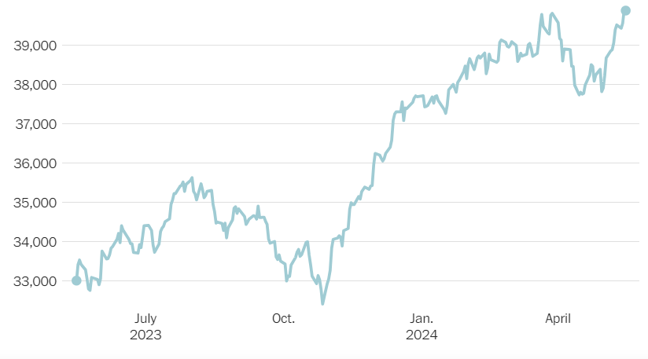

Dow вперше закривається вище 40 000
Серед тих, хто найбільше сприяв зростанню індексу за минулий рік, зробили Microsoft і Goldman Sachs.
.webp)
Промисловий індекс Dow Jones у п'ятницю закрився вище 40 000 пунктів, вперше завершивши торгову сесію вище межі.
Індекс блакитних фішок закрився на позначці близько 40 004, підвищившись за день більш ніж на 0,3%. У четвер індекс ненадовго перевищив 40 000, але впав до закриття торгового дня.
«Те, що колись було незбагненним рівнем, тепер у нас на порозі», — сказав Джон Лінч, головний інвестиційний директор Comerica Wealth Management, в електронному листі The Washington Post. Він додав: «Це досягнення є свідченням потужності накопичення капіталу, інновацій, зростання прибутку та економічної стійкості».
«Те, що колись було незбагненним рівнем, тепер у нас на порозі», — сказав Джон Лінч, головний інвестиційний директор Comerica Wealth Management, в електронному листі The Washington Post. Він додав: «Це досягнення є свідченням потужності накопичення капіталу, інновацій, зростання прибутку та економічної стійкості».
Акції зростали з останнього кварталу 2023 року до цього року, перш ніж призупинити зростання в березні через хвилювання щодо інфляції. Середній показник Dow містить лише близько 30 великих акцій, але він залишається широко відомим еталонним показником як один із найстаріших ринкових індексів.

Браун програв праймеріз і з тих пір змінив свій тон на виборах 2020 року. Він сказав Nevada Independent, що «досить впевнений у наших виборах» і не хоче «повторювати» дебати щодо виборів 2020 року. У заяві The Post Браун не відмовився від цих коментарів.
Віхи з круглим числом «мають особливе значення в серцях і розумі людей», додав він.
Тим не менш, деякі аналітики закликають бути обережними, купуючи на ринку за рекордними цінами. Заккареллі сказав, що інвестори демонструють своєрідне «ірраціональне надлишок», яке включає повернення ризикованих ставок на акції мемів і більш широку концентрацію на хороших новинах, применшуючи ознаки проблем.
Ці ризики включають можливість того, що інфляція буде залишатися високою довше, ніж очікувалося, що може змусити ФРС зберегти ставки на поточному рівні або навіть підвищити їх.
Аналітики також бачать відносну слабкість роздрібних продажів, які в квітні зросли на 4 відсотки. Аналітик галузі роздрібної торгівлі GlobalData Ніл Сондерс назвав показники роздрібної торгівлі «твердими, але не вражаючими» за останні місяці, вказавши на менші витрати в певних дискреційних сферах, таких як косметичні товари та благоустрій будинку.
«Ми як і раніше обережні щодо стану споживачів, але наразі покупці легко справляються з різними економічними проблемами», — сказав Сондерс.
Виконавчий директор JPMorgan Джеймі Даймон також дотримувався обережного тону в інтерв’ю Bloomberg TV у четвер, сказавши, що він стурбований тим, що «веселі розмови» могли засліпити фондовий ринок від ризиків, з якими він стикається.
«Я щойно сказав, що акції дуже високі, і я думаю, що шанси на те, що інфляція залишиться високою або ставки зростуть, вищі, ніж люди думають», — сказав Даймон.
Але нові дані про інфляцію цього тижня показали, що «базова» річна інфляція в квітні становила 3,6 відсотка, що є найнижчим річним зростанням з 2021 року.
Dow та інші фондові індекси уважно відреагували на зміну процентної ставки ФРС: у 2022 році ринки стабільно знижувалися, коли ставки зросли, і відновилися минулого року, коли ставки досягли плато.